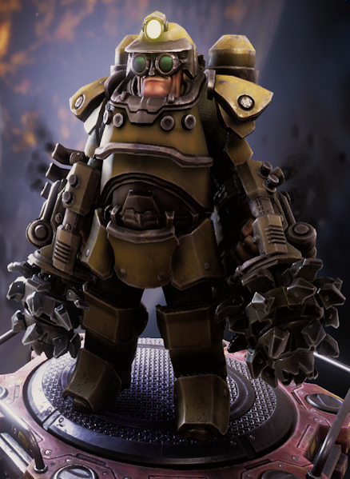

"Le Foreur aime être au cœur de l'action, brûlant tout sur son passage avec des armes chimiques et creusant à travers les murs avec ses fidèles foreuses électriques !"
— Description de la classe
Le Foreur se vante de la vitesse de minage la plus rapide du jeu, ainsi que des armes élémentaires les plus variées parmi toutes les classes.
| Sous-Classes | Arme de départ | Bonus de bases |
|---|---|---|
| Le Contremaitre | Subata I20 | Lorsque vous minez, vous gagnez + 2 % vitesse de minage pendant 2 secondes. Se cumule jusqu'à 25 fois. |
| L'Interrogateur | Lance-Flammes CRSPR |
|
| Le Gros Bras | Hache de Choc |
|